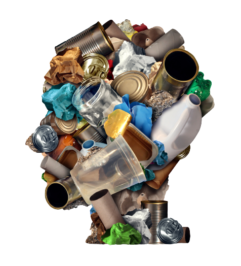

O Consumo Consciente envolve a escolha de produtos que utilizaram menos recursos naturais em sua produção, que garantiram o emprego decente aos que os produziram, e que serão facilmente reaproveitados ou reciclados. Significa comprar aquilo que é realmente necessário, estendendo a vida útil dos produtos tanto quanto possível.
